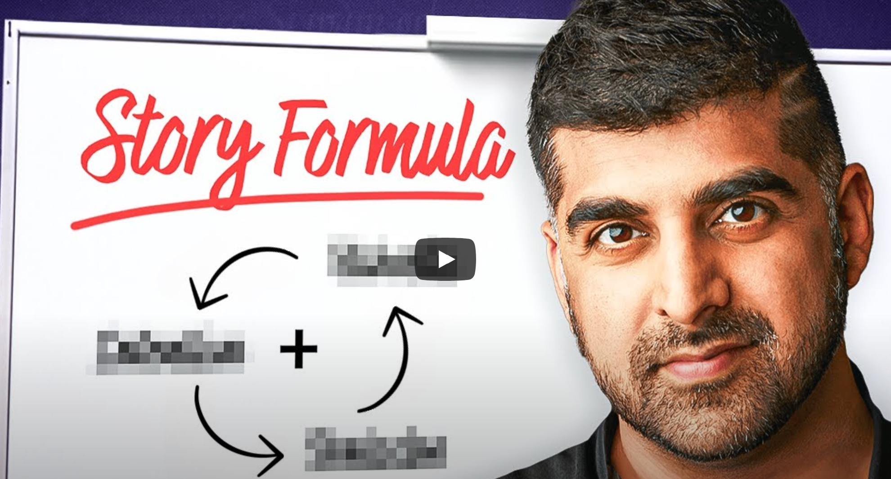
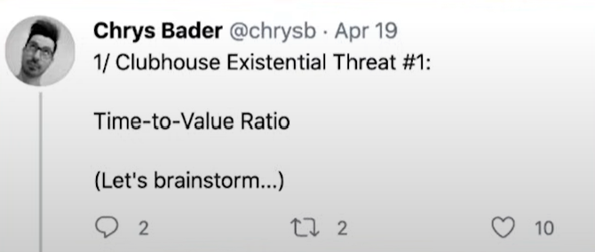
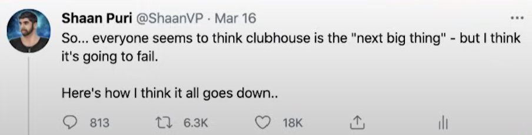

Opening Thoughts
Shaan Puri is an entrepreneur and content creator known for his work in the tech industry and his popular podcast “My First Million.” He has been involved in various startups and business ventures and is recognized for his insights into entrepreneurship, technology, and business strategy. A few months ago he was on the popular “How I Write” podcast. While on the show he blew my mind with tons of great ideas around storytelling. I learned a ton and wanted to share the best ideas here. Check them out below! Also here is a link to the episode.
Binge Bank
If someone wanted to learn more about you, what would they do? Maybe they are a recruiter, trying to offer you the perfect job. Maybe they’re an entrepreneur trying to find their next co-founder. Or maybe it’s a cute girl you’re about to have dinner with. Chances are the only things they can find on you is your social media presence, and hopefully not any mugshots.
Shaan recommends creating a binge bank for yourself. Where in one hour someone’s opinion of you will drastically grow. Think of it as a bank of content that someone can go down the rabbit hole on you. Blogs, videos, newsclippings. Whatever content that gives someone all access pass to how your brain works and who you are as a person. This binge bank can become more powerful than a resume, because it shows your true self, while also showcasing how you communicate.
After hearing this I started to curate my own binge bank. I added a Start Here section to my personal site. On this page I have links to posts that best describe me and my capabilities. Right now it’s small but one day I hope to grow it to the binge banks of people like Ryan Holiday, Tim Ferriss, or Mark Manson.
Aaron Sorkin’s 30 Second Masterclass
“I worship at the alter of intention and obstacle.”
— Aaron Sorkin
Aaron Sorkin is a famous screenwriter. Creating hits like the TV show “The West Wing” or movies like “The Social Network”. When asked about storytelling. His simple advice was that every story needs to have a clear intention and obstacle.
In any story the main character has a have a clear intention. What do they want? Why do they want it? After that you need an obstacle. Who or what is trying to stop them from getting their intention? It’s fundamental to every story, but doesn’t have to be life and death. Every movie you have ever seen has this. If it didn’t have a strong intention or obstacle in the first 10 minutes, you probably hated the movie.
Adding Humor in Storytelling
Humor is the sauce but not the meal in most stories. All humor is just surprise. If you see the punch line coming it’s not very funny. Try to add humor into your storytelling, just don’t make it the whole story. Leave that up to the comedians.
Hooks vs Frames
Everyone has seen Twitter/X threads that start with something like “The unbelievable story of XYZ person doing XYZ thing”. It’s maximum clickbait and makes me cringe every time I see it. These are tactics that try to hook a reader into continuing to engage in the content. Instead of creating hooks, Shaan recommends creating the right frame for a story. Hooks are about the words you’re going to write. Frames are about the idea and how you’re going to connect multiple ideas together to make it relevant to an audience.
Check out the following tweets about the popular audio app Clubhouse.

This first tweet is by someone who founded a similar audio app before Clubhouse. So he’s very knowledgeable on the subject. The tweet gained little traction because he told no story. It was dry and full of technical industry facts and jargon.

Now take a similar tweet by Shaan. In his tweet he told a story. He put in the frame of “every one thinks X, but I think Y, and here’s how I think it’s going to go down”, and it garnered millions of views. The thread is a mini screenplay and masterclass on how the right frame can make an idea turn into a powerful story.
Another powerful example of how the right frame can have an impact is how Dave Chappelle is trying to get the rights back to his famous show. Instead of complaining directly to Viacom (owners of Comedy Central which initially hosted the show), he told a story with a powerful framing. It wasn’t a funny story, but one that made his fans start boycotting the show on streaming platforms in hopes to get paid for his original hard work. This was all due to a powerful story with the right framing. Check out this video to hear the full story.
Tell 100 Stories
If you don’t know who Mr. Beast is than you probably live under a rock with no internet connection. Mr. Beast often gets asked around how others can make content that gets billions of views just like his YouTube videos. His advice is simple. Make 100 videos, and each time do one thing better than the last video. He says it’s perfect advice, because either no one actually goes through with making 100 videos or the people that do never reach out to him again because once they make 100 videos they figured out how to make them successful.
To tell great stories you need to tell hundreds of stories, maybe thousands. You need to get intelligent reps in. Each time getting a little better at telling a story. With each rep you get a little better, and these gains can compound fast over time.
Storyworthy Book
Every great story needs stakes. Make clear what’s at stake if they don’t get their intention. Doesn’t have to be high stakes. No one cares about your vacation story or frat party. Stakes come from the emotion. Story is a five second moment of change. Everything comes up to one moment where a thing is transformed. Movies like rom coms are always the exact opposite of the start, having a strong transformation.
OTher notes
A story is not a record of what happened. Story is a change, a transformation. At the start it was this way, then there was change and here’s how it ended. Only discuss the change.
Work backwards from the emotion. We only stop to consume something if it creates some sort of emotion. Making videos go viral. Viral means how many people share what you created. Only things people will share is content that makes people laugh, surprise, interesting, blow your mind, get sad, get mad, nostalgic. Start with the desired reaction they want then create the content based on the emotion.
Understand your audience and the state of mind they are in. You are writing to one person at a time. Debby at her desk, sally in her bed scrolling twitter.
Miss Excel gets herself into a peak state of mind. Only works on her energy first, then works on creating content second. Once the idea comes she hits record immediately. She believes all content is an energy transfer from herself to her phone. Writers should be more like performers. Where you have a warm up routine to get you psyched up and ready to create content. Write when you get inspired.
Get your mind right with state changes. First is change in your physiology, do jumping jack, wind sprint to get your body changed. Tony Robbins does this with changing his body temp, either super warm or super cold. It’s the fastest way to change how you feel. Second is change in your focus. Second is the story you tell yourself.
Excitement is the engine and the rudder. Only do things you are excited about. It powers you to keep working hard and also steers you in the right direction to what you’re destined to be in life.
1-2-3 rule of interestingness. Tell me one thing that’s interesting I’ll say oh wow that’s interesting. Tell me two things, Ill say those are interesting. Tell me three interesting things and I’ll say you’re interesting.
People will follow you to the ends of the earth if you can give them a feeling more consistently than anyone else. How ppl feel after they hear your story is the end goal.